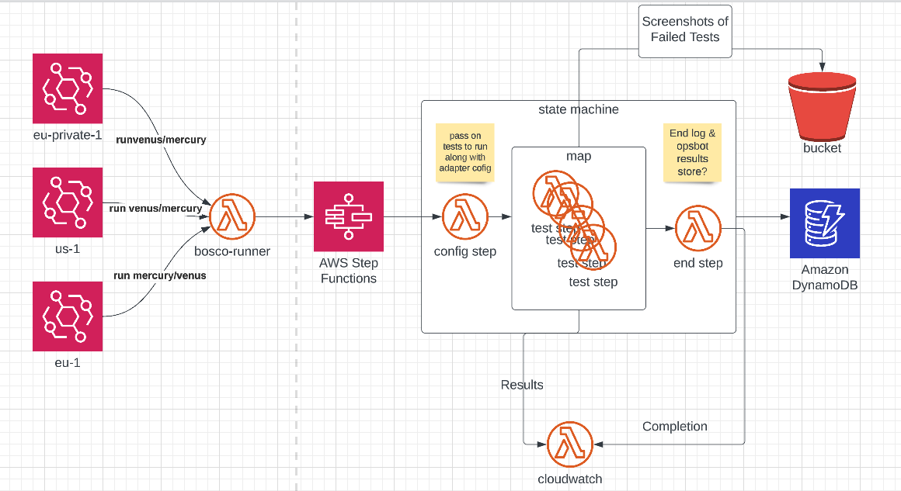

Bosco


Bosco is a feature based test runner that is intended to identify whether the components of a system are disfunctional or not and to report errors if so. It was built using Puppeteer, an automation tool and Mocha, a testing framework. It is designed using an AWS state machine, using a step function which runs a Lambda function for each test or if required, an array of tests. It was deployed using a Docker image and Cloud Formation. Screenshots of failed tests are stored in an S3 bucket and alerts are sent to a Slack channel to notify developers of any failed tests.

Puppeteer

Bosco was built using Puppeteer, an automation tool that is used for web scraping. It replaced Testcafe which was resource heavy and slow.
Learn moreLambda

Bosco replaced Frankenstein which was run on two EC2 instances. The main issue with Frankenstein was it did not scale, the company did not have the ability to add more tests. Bosco is run via a step function state machine. Theoretically it is infinitely scalable. It is also billed per execution as opposed to Frankenstein which ran every 20 minutes and was costly.
Learn moreMocha

Mocha was the chosen test framework for Bosco. It gathers all the tests in an array, runs the tests and reports the results. These results were accessible in Dynamo DB and Cloudwatch. Screenshots are taken of failed tests and stored in S3.
Learn more